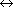

Based on chapter 16 in The Way of Z.
Links to more Z examples.
This page looks best when this  and this X are
about the same size:
and this X are
about the same size:  X. See these viewing tips.
X. See these viewing tips.
Here we model a simple document control system in Z. People who work together need to share their work, but there are many opportunities for misunderstandings and confusion. Errors can be introduced when two people working on the same thing --- a file of program code, for example --- make changes that conflict with each other. We can enlist the computer to help prevent such errors: this is the purpose of a document control system. Real examples include SCCS (source code control system) and RCS (revision control system).
Here is an excerpt from the informal description:
If a user wants to check out a document in order to change the document and the user has the permission to change it, and nobody else is changing it at the moment, then that user may check the document out.
As soon as a user has checked out a document for editing everyone else is disallowed from checking it out (of course people with read permission can read it).
When the user is done editing the document, it should be checked in, allowing another user to check it out.
Here is the Z model. We begin by introducing two basic sets that hold everything of interest in this universe, namely people and documents:
| [PERSON, DOCUMENT] |
Some people have permission to change particular documents. We can model that as a relation on documents and people:
| permission: DOCUMENT  PERSON | ||
This relation is just a set of pairs of the form (document, person). For example, Doug can change the specification, Aki and Doug can change the design, and Aki and Phil can change the code.
| doug, aki, phil: PERSON | ||
| spec, design, code: DOCUMENT | ||
| permission = { (spec, doug), (design, doug), (design, aki), (code, aki), (code, phil) } |
The state of the system is merely another relation of the same type, this one saying which documents are actually checked out to whom. The central requirement is that a document can only be checked out to one person at a time, so in this case the relation is a function: it associates each object in the domain with a single object in the range.
 |
Documents | ||
| checked_out: DOCUMENT | |||
| checked_out | |||
Note that checked_out is a partial function, indicated by the stroke
through the arrow  . This means that some documents might not be
checked out to anybody. The predicate says that documents can only be
checked out to people who have permission to change them.
. This means that some documents might not be
checked out to anybody. The predicate says that documents can only be
checked out to people who have permission to change them.
A possible state of our system occurs when Doug has checked out the specification and design, and Phil has checked out the code.
| checked_out = { (design, doug), (spec, doug), (code, phil) } |
We need two operations that change the state, CheckOut and CheckIn. Here is CheckOut. It has two input parameters, the person p? and the document d?.
|
CheckOut | ||
| p?: PERSON | |||
| d?: DOCUMENT | |||
| d? | |||
| (d?, p?) | |||
| checked_out' = checked_out {(d?, p?)} | |||
CheckOut has two preconditions. They are the predicates that contain no primed ``after'' variables. First, document d? can't already be checked out: it can't be in the domain of checked_out. Moreover, the person doing the checking out needs permission: (d?, p?) must belong to permission. If the preconditions are satisfied we add the pair (d?,p?) to checked_out; this prevents anyone else from checking out d?.
We must account for cases where the preconditions are not satisfied.
There are two preconditions, so there must be two such cases.
CheckedOut says that the document is already checked out: $d?  dom checked_out. Unauthorized$ expresses that the person does not
have permission: (d?,p?)
dom checked_out. Unauthorized$ expresses that the person does not
have permission: (d?,p?)  permission. In both cases nothing
gets checked out and the state of the system does not change:
permission. In both cases nothing
gets checked out and the state of the system does not change:
 Documents.
Documents.
| CheckedOut |
|
Unauthorized | ||
| p?: PERSON | |||
| d?: DOCUMENT | |||
| (d?,p?) | |||
The total operation T_CheckOut covers all three possibilities.
| T_CheckOut |
This concludes our presentation. This little study illustrates some typical features of Z models:
You can ignore details in order to focus on the aspects of the problem you are interested in. Here we concentrated on permissions and keeping track of who has checked out what. We did not model actually copying documents back and forth between the central repository and users' local directories. We modelled the collections of documents and users as fixed sets, and the permissions as a constant. A real document control system would have to provide some way to enter new documents into the system and delete old ones, and there would also have to be a way to assign and change permissions. If we wished to model all that in Z we could represent people, documents, and permissions as variables in the state schema instead of basic types and global constants.
Models should be simple. If you find yourself writing complicated functions and quantified predicates, it is usually a sign that you are on the wrong track. Let the basic properties of sets, relations and functions do the work for you. The requirement that only one person at a time can check out a document can be neatly expressed by a function.
The requirements about permissions can be represented by letting the checked_out function be a subset of the permission relation. In Z, functions are relations and relations are sets, so operators defined for sets also apply to relations and functions, and you can put them all together in the same expressions. This is an advantage of Z that you don't find in every formal notation.
Back to top
E-mail: jon@u.washington.edu